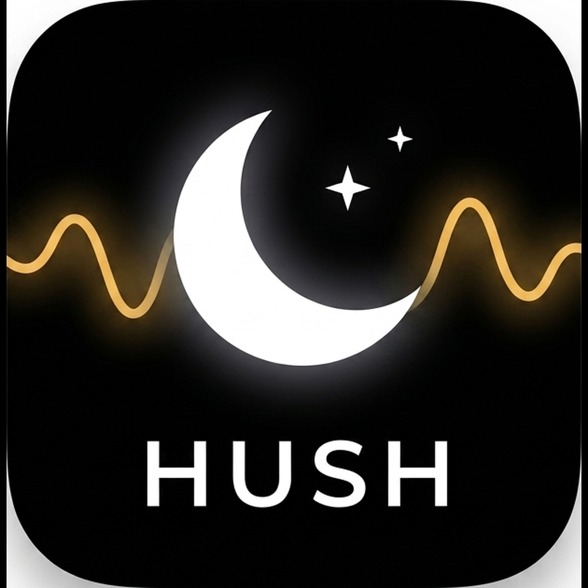

Local white-noise & ambient sounds for sleep and focus — works fully offline, no account.
Questions, bug reports, or feedback? Email us:
No sound plays. Check the device mute switch and volume, and make sure another app isn't holding audio. Hush plays bundled sounds — no internet needed.
Does Hush work offline / in Airplane Mode? Yes. All sounds are bundled in the app and it makes no network requests.
My mixes or favorites disappeared. Saved mixes, favorites, and timer settings are stored locally on your device. Deleting the app, restoring the device, or some OS changes can clear them — see the Terms of Use.
Apple Watch / widget. The app shares a small play/pause + mix-name snapshot with the widget and Watch app through Apple's on-device App Group / WatchConnectivity. It stays on your device; we never receive it.
See our Privacy Policy and Terms of Use.